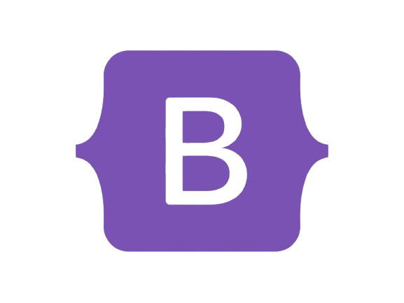
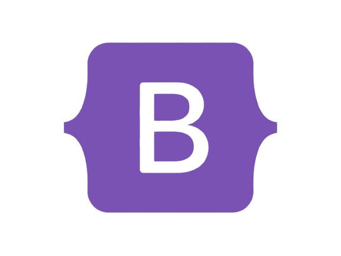
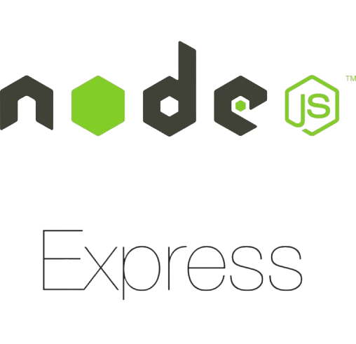

Projets
Découvrez une sélection de mes projets, allant du développement web à des jeux de plateau.
NFT Universe
Développement d'une boutique en ligne qui permet l'achat de NFT.
 

4Mation
4Mation est un jeu de plateau développé en Java utilisant le paradigme MVC, offrant une expérience de jeu structurée et interactive.

QuanticGP
QuanticGP est une plateforme événementielle pour le Grand Prix de Monaco, permettant la réservation de billets pour les visiteurs et utilisateurs, de stands pour les prestataires. Elle offre également des outils de gestion des activités et des prestataires pour les organisateurs.



Quantic Vision
Développement d'un site internet pour présenter l'entreprise Quantic Vision.